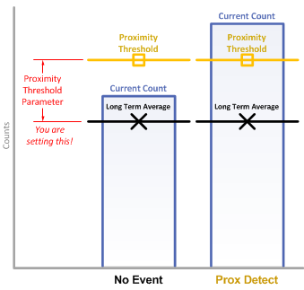

The proximity threshold sets the level of interaction required by the user for a proximity detection to be declared for an element. The proximity threshold is set as an absolute deviation from the long term average. In other words, it specifies how large the delta must be in the direction of interest for a proximity state to be declared.
Self Capacitance Example
When measuring an element in self-capacitance mode, a user's touch on or
proximity to the element's electrode causes the capacitance of that electrode
to increase. This causes a decrease in the measurement result. When a decrease
in the measurement surpasses the proximity threshold, the proximity flag is set.
Mutual Capacitance Example
In mutual-capacitance mode, a user's touch on or proximity to an element's
electrode causes the mutual capacitance between the Rx and Tx to decrease.
This causes an increase in the measurement result. When an increase in the measurement
surpasses the proximity threshold, the proximity flag is set.

The absolute delta at any given time is defined by the following:
Implementation Notes
One proximity threshold is set and used
for a whole sensor. This means that you only need to set one proximity threshold
per sensor, and all elements underneath that sensor will use that threshold.
While only one threshold is set, each element still tracks and shows it's proximity
status independently. Note that the proximity detect flag is also dependent upon the de-bounce process.
If de-bounce is used, the proximity status flag will not be set immediately after the threshold crossing.
A global sensor proximity flag is made available at the sensor level. A proximity detect on any element
will cause the sensor's global proximity detect flag to be set.
Range of Valid Values for the Proximity Threshold Parameter
The proximity threshold may be set from 1 to 8191.
Affected Software Parameters
The Prox_Threshold parameter corresponds to the
ui16ProxThreshold
member of the
tSensor
type in the CapTIvate Touch Library.
If a prox detect occurs at runtime, the
bSensorProx
member of the related
tSensor
instance will be set to true, alerting the application that an element
on that sensor entered a prox state.
In addition, the
bProx
member of the related
tElement
instance will also be set to true, allowing the application to determine
which specific element(s) entered into a prox state.